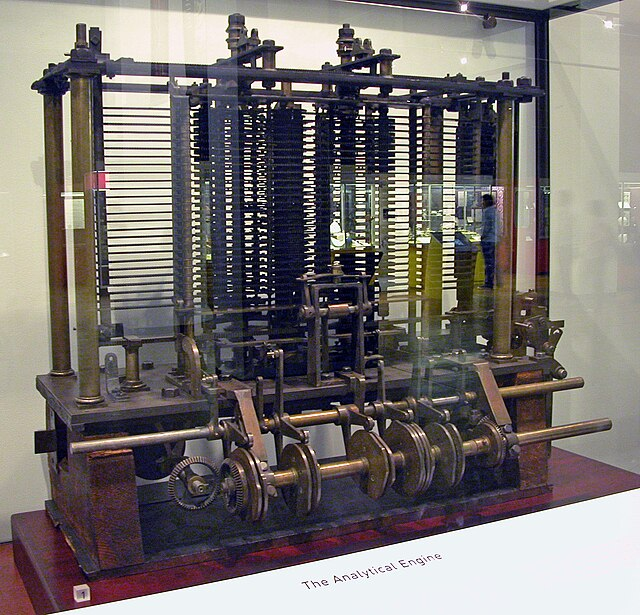
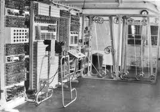
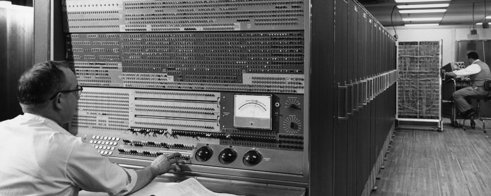
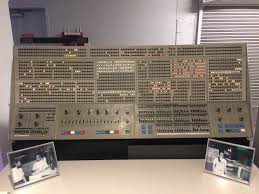
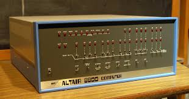
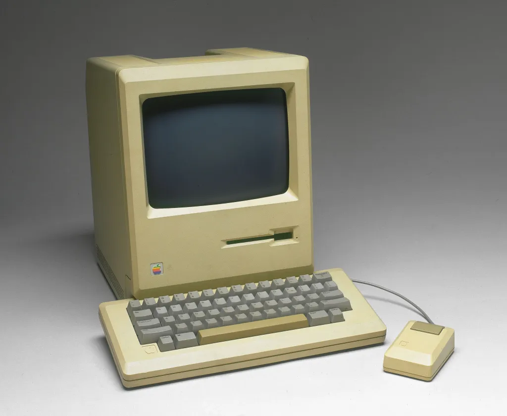
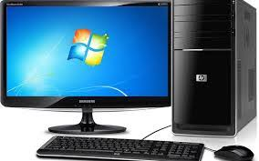

Linha do tempo
 |
arames paralelos. nos dedos. atribuindo a cada haste un múltiplo de dez. as operações de somar (+) e subtrair (-). |
longevidade. subtração. e divisões. porque era excessivamente cara. |
 |
|  |
Charles Babbage. de uso geral. e legais, o engenho nunca foi realmente construido. |
comunicações cifradas alemãs durante a Segunda Guerra Mundial |
 |
 |
foi o primeiro computador digital eletrônico de grande escala. 25m de comprimento e ocupava 180m² de área construida. tanta energia que as luzes de Filadélfia piscaram. funcionamento era parecido com uma calculadora simples de hoje. |
supercomputador que usou a nova tecnologia. executava até 1 milhão de operações por segundo. dólares na época. usadas em várias empresas, como a própria IBM. |
 |
|  |
saída modernos para a época, como discos e fitas de armazenamento. em papel. maior de funcionalidades, e o preço também diminuiu. |
como computador até aquela época. mesa e um formato retangular. anteriores. se interessou pela máquina, criando a sua linguagem de programação Altair Basic. entradas e saída, sem uma interface gráfica propriamente dita. |
 |
|  |
ainda faltava algo no projeto: apesar de suas funcionalidades, este computador não era fácil de ser utilizado por pessoas comuns. possuírem a interface gráfica como nós conhecemos hoje em dia, com pastas, menus e área de trabalho. vendendo um número enorme de máquinas. |
|  |
e baixo custo. de indivíduos. transportado e utilizado em diferentes lugares com facilidade. |